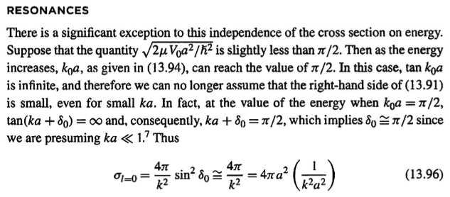

Visualizer for the Relationship between the Derivative and Trigonometric Tangent Function
Arihant Gadgade
Writings
Date Published: 11/11/2024
I was interested in the fact that trig $\tan(x)$ and derivative tangent share the same name, but funnily I hadn't really fleshed out the connection in my head, even though they have the same mathematical flavor of representing slope.
I was introduced to $\tan(\theta)$ as something representing opposite side over adjacent side wrt triangles, and tangent of a derivative as an instantaneous rise over run.
But now I can connect the concept of a tangent and the tangent function:
At any point take the tangent of the function,
the angle this tangent line makes with the x-axis is $\theta$ ,
$\tan(\theta)$ then represents steepness.
Hence $\theta=0 \implies \tan(0)=0$,
thus an angle of 0 is trivially no steepness along a curve.
And $\theta=\frac{\pi}{2} \implies \tan(\frac{\pi}{2}) = \infty$,
thus an angle of $\frac{\pi}{2}$ is infinite steepness along a curve.
This animation illustrates this by allowing the user to input any function and seeing the corresponding location along the tan curve as well as the corresponding unit triangle representation of the slope.
Note: Used ChatGPT to build most of this out. Had the idea in my head to use manipulate and show the graph of the function and the corresponding point along the tan function that represent the slope of the function, as well as the unit triangle so one can get a notion of the trigonometric nature. It was incredibly fast and efficient to do so, and I only used the 4o model. Interesting bc Wolfram talks about Mathematica as an ideation software, as it allows one to quickly go from (1) idea, (2) concept of how it should be implemented, (3) implementation. LLMs seem to enhance this capability, as it reduces the time of step 3 by allowing me to just test and verify its implementation with small tweaks.
This thought came up while reading Ch. 13 of Townsend's A Modern Approach to Quantum Mechanics:
Aside: this was also an excuse for me to try out MathJax as I wanted to try using LaTeX in my html code.